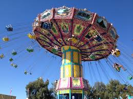
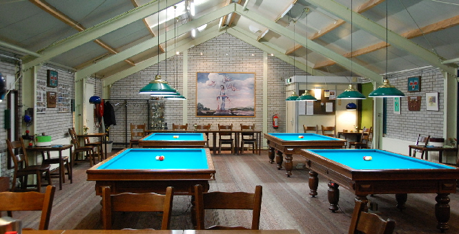

Rijswijk
| Rijswijk | |
| Oppervlakte | 14,49 km2 |
| Inwonersaantal | 57.096 |
| Provincie | Zuid Holland |
| Postcodes | 2280 - 2289 |
| CBS Code | 0603 |
 Drievliet is volgens eigen zeggen voor alle leeftijden geschikt. In het park zijn er achtbanen en spannende uitdagingen voor de grote kinderen en veel leuke attracties voor de basisschoolleeftijd. Maar de kleintjes zijn ook niet vergeten. Denk aan tractors, draaimolens en treintjes. Ideaal dus om met gemengde leeftijden naar toe te gaan, zou je denken. Blogger Iris S. test het uit met haar gezin en een vriendin met jongere kinderen. Familiepark Drievliet: leuk voor alle leeftijden We spreken op een regenachtige zaterdag in de zomervakantie af om met een goede vriendin en haar gezin wat leuks te doen. Bij elkaar hebben we vijf kinderen, variërend van dreumes van 2 tot puber van 14. Best een uitdaging, want wat is nou voor iedereen leuk? “Vorig jaar was ik op schoolreisje naar Drievliet, daar is het echt leuk”, mengt onze jongste (9) zich in het gesprek. “Je hebt daar achtbanen, maar ook veel dingen waar kleintjes in kunnen”. Familiepark Drievliet… het is al een tijdje geleden dat we daar met het gezin zijn geweest. We vinden het allemaal een goed idee.
 BCCD is een van de grotere biljartverenigingen in de regio Den Haag en heeft meer dan 100 leden, die kunnen beschikken over een eigen clublokaal met vier biljarts waar gedurende nagenoeg de gehele week op avonden en/of ochtenden en/of middagen kan worden gespeeld. BCCD is lid van de KNBB en speelt met een aantal teams in verschillende competitie klassen in het district Den Haag. De vereniging is opgericht in 1980.